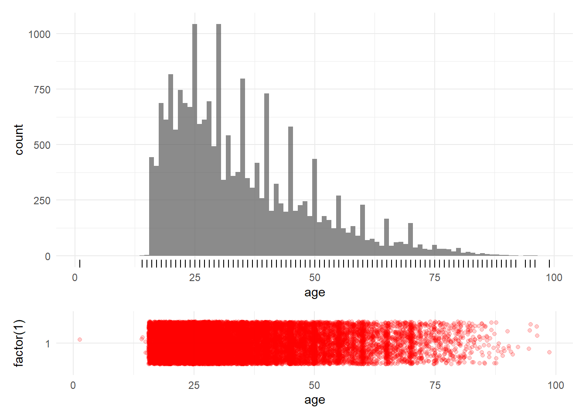

Chapter 7 Univariate summary CRASH-2 dataset
## Warning: package 'here' was built under R version 3.6.3## here() starts at C:/R/Projects/ida-regression-private2## Warning: package 'tidyverse' was built under R version 3.6.3## -- Attaching packages ------------------------------------------------------------------------ tidyverse 1.3.0 --## v ggplot2 3.3.0 v purrr 0.3.4
## v tibble 3.0.1 v dplyr 0.8.5
## v tidyr 1.0.2 v stringr 1.4.0
## v readr 1.3.1 v forcats 0.5.0## Warning: package 'ggplot2' was built under R version 3.6.3## Warning: package 'tibble' was built under R version 3.6.3## Warning: package 'tidyr' was built under R version 3.6.3## Warning: package 'readr' was built under R version 3.6.3## Warning: package 'purrr' was built under R version 3.6.3## Warning: package 'dplyr' was built under R version 3.6.3## Warning: package 'stringr' was built under R version 3.6.3## Warning: package 'forcats' was built under R version 3.6.3## -- Conflicts --------------------------------------------------------------------------- tidyverse_conflicts() --
## x dplyr::filter() masks stats::filter()
## x dplyr::lag() masks stats::lag()## Warning: package 'janitor' was built under R version 3.6.3##
## Attaching package: 'janitor'## The following objects are masked from 'package:stats':
##
## chisq.test, fisher.test## Warning: package 'summarytools' was built under R version 3.6.3## Registered S3 method overwritten by 'pryr':
## method from
## print.bytes Rcpp## For best results, restart R session and update pander using devtools:: or remotes::install_github('rapporter/pander')##
## Attaching package: 'summarytools'## The following object is masked from 'package:tibble':
##
## view7.1 Read data
7.1.1 Load the dataset.
## Rows: 20,207
## Columns: 44
## $ entryid <int> 1, 2, 3, 4, 5, 6, 7, 8, 9, 10, 11, 12, 13, 14, 15, 16, ...
## $ source <fct> electronic CRF by email, electronic CRF by email, elect...
## $ trandomised <date> 2005-06-11, 2005-05-29, 2005-05-25, 2005-05-26, 2005-0...
## $ outcomeid <int> 2, 190, 4, 5, 1154, 6, 7, 8, 44, 144, 57, 58, 122, 54, ...
## $ sex <fct> male, female, male, male, female, male, male, male, mal...
## $ age <int> 50, 27, 30, 40, 23, 19, 27, 16, 29, 44, 41, 56, 65, 37,...
## $ injurytime <dbl> 1.00, 1.00, 1.00, 2.00, 4.00, 3.00, 0.50, 1.00, 1.00, 0...
## $ injurytype <fct> blunt, blunt, blunt, penetrating, penetrating, penetrat...
## $ sbp <int> 75, 100, 70, 60, 80, 90, 90, 90, 116, 160, 120, 60, 95,...
## $ rr <int> 28, 20, 26, 20, 22, 30, 26, 28, 15, 12, 15, 9, 20, 23, ...
## $ cc <int> 5, 2, 6, 5, 3, 5, 5, 2, 3, 2, 3, 3, 5, 5, 5, 3, 3, 3, 3...
## $ hr <int> 120, 80, 130, 120, 100, 90, 96, 118, 118, 130, 70, 100,...
## $ gcseye <int> 1, 4, 4, 2, 3, 4, 4, 4, 1, 4, 4, 1, 4, 4, 3, 1, 1, 4, 4...
## $ gcsmotor <int> 1, 6, 6, 5, 6, 6, 6, 6, 1, 6, 6, 1, 6, 6, 5, 3, 3, 6, 6...
## $ gcsverbal <int> 1, 5, 4, 3, 5, 5, 5, 5, 1, 5, 5, 1, 4, 5, 4, 1, 1, 5, 5...
## $ gcs <int> 3, 15, 14, 10, 14, 15, 15, 15, 3, 15, 15, 3, 14, 15, 12...
## $ ddeath <date> 2005-06-14, NA, NA, 2005-05-28, NA, 2005-06-05, NA, NA...
## $ cause <fct> head injury, NA, NA, multi organ failure, NA, other, NA...
## $ scauseother <fct> , , , , , PNEUMONIA, , , , , , , , , , , , , , , , , , ...
## $ status <fct> NA, discharged, discharged, NA, discharged, NA, dischar...
## $ ddischarge <date> NA, 2005-06-24, 2005-06-08, NA, 2005-06-24, NA, 2005-0...
## $ condition <fct> NA, "minor symptoms", "no symptoms", NA, "no symptoms",...
## $ ndaysicu <dbl> 0, 0, 6, 2, 0, 9, 7, 0, 7, 4, 7, 23, 1, 2, 3, 3, 24, 2,...
## $ bheadinj <int> 1, 0, 0, 0, 0, 0, 0, 0, 1, 0, 0, 1, 0, 0, 0, 1, 1, 0, 0...
## $ bneuro <int> 1, 0, 0, 0, 0, 0, 0, 0, 1, 0, 0, 1, 0, 0, 0, 0, 1, 0, 0...
## $ bchest <int> 0, 0, 1, 1, 0, 1, 1, 0, 0, 0, 0, 0, 0, 1, 1, 0, 0, 1, 0...
## $ babdomen <int> 0, 0, 1, 1, 1, 0, 0, 1, 1, 0, 1, 0, 1, 1, 0, 0, 0, 1, 0...
## $ bpelvis <int> 0, 0, 0, 0, 0, 0, 0, 0, 0, 0, 0, 0, 0, 0, 0, 0, 0, 0, 0...
## $ bpe <int> 0, 0, 0, 0, 0, 0, 0, 0, 0, 0, 0, 0, 0, 0, 0, 0, 0, 0, 0...
## $ bdvt <int> 0, 0, 0, 0, 0, 0, 0, 0, 0, 0, 0, 0, 0, 0, 0, 0, 0, 0, 0...
## $ bstroke <int> 0, 0, 0, 0, 0, 0, 0, 0, 0, 0, 0, 0, 0, 0, 0, 0, 0, 0, 0...
## $ bbleed <int> 0, 0, 0, 0, 0, 0, 0, 0, 0, 0, 1, 0, 0, 0, 0, 0, 0, 0, 0...
## $ bmi <int> 0, 0, 0, 0, 0, 0, 0, 0, 0, 0, 0, 0, 0, 0, 0, 0, 0, 0, 0...
## $ bgi <int> 0, 0, 0, 0, 0, 0, 0, 0, 1, 0, 0, 0, 0, 0, 0, 0, 0, 0, 0...
## $ bloading <int> 1, 1, 1, 1, 1, 1, 1, 1, 1, 1, 1, 1, 1, 1, 1, 1, 1, 1, 1...
## $ bmaint <int> 1, 1, 1, 1, 1, 1, 1, 1, 1, 1, 1, 1, 1, 1, 1, 1, 1, 1, 1...
## $ btransf <int> 1, 0, 1, 1, 0, 1, 1, 1, 1, 0, 1, 1, 0, 1, 1, 0, 1, 0, 0...
## $ ncell <dbl> 1, NA, 2, 4, NA, 2, 1, 1, 16, NA, 8, 4, NA, 4, 3, NA, 3...
## $ nplasma <int> 0, NA, 0, 0, NA, 0, 0, 0, 9, NA, 11, 9, NA, 0, 0, NA, 0...
## $ nplatelets <int> 0, NA, 0, 0, NA, 0, 0, 0, 22, NA, 10, 0, NA, 0, 0, NA, ...
## $ ncryo <int> 0, NA, 0, 0, NA, 0, 0, 0, 0, NA, 0, 0, NA, 0, 0, NA, 0,...
## $ bvii <int> 0, 0, 0, 0, 0, 0, 0, 0, 0, 0, 0, 0, 0, 0, 0, 0, 0, 0, 0...
## $ boxid <int> 2001, 2001, 2011, 2011, 2011, 2011, 2011, 2011, 4035, 4...
## $ packnum <int> 25, 28, 21, 22, 23, 24, 25, 28, 41, 41, 42, 43, 81, 82,...7.1.2 Describe the dataset
7.1.2.1 Hmisc describe
## Warning in png(file, width = 1 + k * w, height = h): 'width=16, height=13' are
## unlikely values in pixels## Warning in png(file, width = 1 + k * w, height = h): 'width=10, height=13' are
## unlikely values in pixels## Warning in png(file, width = 1 + k * w, height = h): 'width=16, height=13' are
## unlikely values in pixels## Warning in png(file, width = 1 + k * w, height = h): 'width=19, height=13' are
## unlikely values in pixels## Warning in png(file, width = 1 + k * w, height = h): 'width=10, height=13' are
## unlikely values in pixels## Warning in png(file, width = 1 + k * w, height = h): 'width=16, height=13' are
## unlikely values in pixelscrash2
44 Variables 20207 Observations
44 Variables 20207 Observations
entryid: Unique Numbers for Entry Forms

| n | missing | distinct | Info | Mean | Gmd | .05 | .10 | .25 | .50 | .75 | .90 | .95 |
|---|---|---|---|---|---|---|---|---|---|---|---|---|
| 20207 | 0 | 20207 | 1 | 10132 | 6760 | 1011 | 2022 | 5060 | 10130 | 15204 | 18242 | 19255 |
source: Method of Transmission of Entry Form to CC

| n | missing | distinct |
|---|---|---|
| 20207 | 0 | 5 |
| lowest : | telephone | telephone entered manually | electronic CRF by email | paper CRF enteredd in electronic CRF | electronic CRF |
| highest: | telephone | telephone entered manually | electronic CRF by email | paper CRF enteredd in electronic CRF | electronic CRF |
trandomised: Date of Randomization

n missing distinct Info Mean Gmd .05
20207 0 1664 1 2008-04-01 466.9 2006-03-10
.10 .25 .50 .75 .90 .95
2006-07-19 2007-06-10 2008-06-06 2009-02-26 2009-08-27 2009-10-28
| lowest : | 2005-05-19 | 2005-05-22 | 2005-05-25 | 2005-05-26 | 2005-05-27 |
| highest: | 2010-01-11 | 2010-01-12 | 2010-01-14 | 2010-01-22 | 2010-01-23 |
outcomeid: Unique Number From Outcome Database

| n | missing | distinct | Info | Mean | Gmd | .05 | .10 | .25 | .50 | .75 | .90 | .95 |
|---|---|---|---|---|---|---|---|---|---|---|---|---|
| 20127 | 80 | 20127 | 1 | 10112 | 6734 | 1010 | 2023 | 5062 | 10116 | 15164 | 18185 | 19193 |
sex
| n | missing | distinct |
|---|---|---|
| 20206 | 1 | 2 |
Value male female Frequency 16935 3271 Proportion 0.838 0.162
age

| n | missing | distinct | Info | Mean | Gmd | .05 | .10 | .25 | .50 | .75 | .90 | .95 |
|---|---|---|---|---|---|---|---|---|---|---|---|---|
| 20203 | 4 | 84 | 0.999 | 34.56 | 15.55 | 18 | 19 | 24 | 30 | 43 | 55 | 64 |
injurytime: Hours Since Injury

| n | missing | distinct | Info | Mean | Gmd | .05 | .10 | .25 | .50 | .75 | .90 | .95 |
|---|---|---|---|---|---|---|---|---|---|---|---|---|
| 20196 | 11 | 93 | 0.972 | 2.844 | 2.35 | 0.5 | 1.0 | 1.0 | 2.0 | 4.0 | 6.0 | 7.0 |
injurytype

| n | missing | distinct |
|---|---|---|
| 20207 | 0 | 3 |
Value blunt penetrating blunt and penetrating Frequency 11189 6552 2466 Proportion 0.554 0.324 0.122
sbp: Systolic Blood Pressure mmHg

| n | missing | distinct | Info | Mean | Gmd | .05 | .10 | .25 | .50 | .75 | .90 | .95 |
|---|---|---|---|---|---|---|---|---|---|---|---|---|
| 19887 | 320 | 173 | 0.989 | 98.45 | 27.86 | 60 | 70 | 80 | 95 | 110 | 130 | 143 |
rr: Respiratory Rate /min

| n | missing | distinct | Info | Mean | Gmd | .05 | .10 | .25 | .50 | .75 | .90 | .95 |
|---|---|---|---|---|---|---|---|---|---|---|---|---|
| 20016 | 191 | 68 | 0.99 | 23.06 | 7.052 | 14 | 16 | 20 | 22 | 26 | 30 | 35 |
cc: Central Capillary Refille Time s

| n | missing | distinct | Info | Mean | Gmd | .05 | .10 | .25 | .50 | .75 | .90 | .95 |
|---|---|---|---|---|---|---|---|---|---|---|---|---|
| 19596 | 611 | 20 | 0.945 | 3.267 | 1.67 | 1 | 2 | 2 | 3 | 4 | 5 | 6 |
Value 1 2 3 4 5 6 7 8 9 10 11 12
Frequency 1510 5328 6020 3367 1805 802 268 271 45 139 3 7
Proportion 0.077 0.272 0.307 0.172 0.092 0.041 0.014 0.014 0.002 0.007 0.000 0.000
Value 13 15 16 17 18 20 30 60
Frequency 3 19 3 1 1 2 1 1
Proportion 0.000 0.001 0.000 0.000 0.000 0.000 0.000 0.000
hr: Heart Rate /min

| n | missing | distinct | Info | Mean | Gmd | .05 | .10 | .25 | .50 | .75 | .90 | .95 |
|---|---|---|---|---|---|---|---|---|---|---|---|---|
| 20070 | 137 | 173 | 0.996 | 104.5 | 23.38 | 70 | 80 | 90 | 105 | 120 | 130 | 140 |
gcseye: Glasgow Coma Score Eye Opening

| n | missing | distinct | Info | Mean | Gmd |
|---|---|---|---|---|---|
| 19475 | 732 | 5 | 0.822 | 2.948 | 1.414 |
Value 0 1 2 3 4 Frequency 1639 2653 1615 2740 10828 Proportion 0.084 0.136 0.083 0.141 0.556
gcsmotor: Glasgow Coma Score Motor Response

| n | missing | distinct | Info | Mean | Gmd |
|---|---|---|---|---|---|
| 19475 | 732 | 7 | 0.782 | 4.794 | 1.797 |
Value 0 1 2 3 4 5 6 Frequency 1639 789 607 658 1144 3009 11629 Proportion 0.084 0.041 0.031 0.034 0.059 0.155 0.597
gcsverbal: Glasgow Coma Score Verbal Response

| n | missing | distinct | Info | Mean | Gmd |
|---|---|---|---|---|---|
| 19472 | 735 | 6 | 0.857 | 3.611 | 1.833 |
Value 0 1 2 3 4 5 Frequency 1642 2568 1200 903 3161 9998 Proportion 0.084 0.132 0.062 0.046 0.162 0.513
gcs: Glasgow Coma Score Total

| n | missing | distinct | Info | Mean | Gmd | .05 | .10 | .25 | .50 | .75 | .90 | .95 |
|---|---|---|---|---|---|---|---|---|---|---|---|---|
| 20184 | 23 | 13 | 0.863 | 12.47 | 3.594 | 4 | 6 | 11 | 15 | 15 | 15 | 15 |
Value 3 4 5 6 7 8 9 10 11 12 13 14
Frequency 784 520 441 584 733 576 504 663 586 951 1356 2140
Proportion 0.039 0.026 0.022 0.029 0.036 0.029 0.025 0.033 0.029 0.047 0.067 0.106
Value 15
Frequency 10346
Proportion 0.513
ddeath: Date of Death

n missing distinct Info Mean Gmd .05
3086 17121 1320 1 2008-03-08 477.7 2006-02-11
.10 .25 .50 .75 .90 .95
2006-06-29 2007-05-01 2008-05-03 2009-02-18 2009-08-23 2009-10-21
| lowest : | 2005-05-28 | 2005-06-05 | 2005-06-12 | 2005-06-14 | 2005-06-22 |
| highest: | 2010-01-09 | 2010-01-15 | 2010-01-17 | 2010-01-20 | 2010-01-24 |
cause: Main Cause of Death

| n | missing | distinct |
|---|---|---|
| 3089 | 17118 | 7 |
| lowest : | bleeding | head injury | myocardial infarction | stroke | pulmonary embolism |
| highest: | myocardial infarction | stroke | pulmonary embolism | multi organ failure | other |
scauseother: Description of Other Cause of Death
| n | missing | distinct |
|---|---|---|
| 20207 | 0 | 227 |
| lowest : | Acute Hypoxia | ACUTE LUNG INJURY | Acute Pulmonary Oedema | Acute Renal Failure | |
| highest: | trauma raquimedular | Traumatic Shock | Type I Respiratory failure | Unsurvivable injuries | Visceral injury |
status: Status of Patient at Outcome if Alive

| n | missing | distinct |
|---|---|---|
| 17038 | 3169 | 3 |
Value discharged still in hospital
Frequency 13681 1969
Proportion 0.803 0.116
Value transferred to other hospital
Frequency 1388
Proportion 0.081
ddischarge: Date of discharge, transfer to other hospital or day 28 from randomization

n missing distinct Info Mean Gmd .05
17022 3185 1658 1 2008-04-18 464.7 2006-03-24
.10 .25 .50 .75 .90 .95
2006-08-04 2007-06-30 2008-06-25 2009-03-12 2009-09-08 2009-11-09
| lowest : | 2005-05-26 | 2005-06-03 | 2005-06-06 | 2005-06-08 | 2005-06-10 |
| highest: | 2010-02-02 | 2010-02-03 | 2010-02-04 | 2010-02-07 | 2010-02-10 |
condition: Condition of Patient at Outcome if Alive

| n | missing | distinct |
|---|---|---|
| 16956 | 3251 | 5 |
| lowest : | no symptoms | minor symptoms | some restriction in lifestyle but independent | dependent, but not requiring constant attention | fully dependent, requiring attention day and night |
| highest: | no symptoms | minor symptoms | some restriction in lifestyle but independent | dependent, but not requiring constant attention | fully dependent, requiring attention day and night |
ndaysicu: Number of Days Spent in ICU

| n | missing | distinct | Info | Mean | Gmd | .05 | .10 | .25 | .50 | .75 | .90 | .95 |
|---|---|---|---|---|---|---|---|---|---|---|---|---|
| 20025 | 182 | 49 | 0.822 | 2.662 | 4.249 | 0 | 0 | 0 | 0 | 3 | 8 | 14 |
bheadinj: Significant Head Injury
| n | missing | distinct | Info | Sum | Mean | Gmd |
|---|---|---|---|---|---|---|
| 20127 | 80 | 2 | 0.652 | 6422 | 0.3191 | 0.4346 |
bneuro: Neurosurgery Done
| n | missing | distinct | Info | Sum | Mean | Gmd |
|---|---|---|---|---|---|---|
| 20127 | 80 | 2 | 0.28 | 2099 | 0.1043 | 0.1868 |
bchest: Chest Surgery Done
| n | missing | distinct | Info | Sum | Mean | Gmd |
|---|---|---|---|---|---|---|
| 20127 | 80 | 2 | 0.385 | 3043 | 0.1512 | 0.2567 |
babdomen: Abdominal Surgery Done
| n | missing | distinct | Info | Sum | Mean | Gmd |
|---|---|---|---|---|---|---|
| 20127 | 80 | 2 | 0.563 | 5042 | 0.2505 | 0.3755 |
bpelvis: Pelvis Surgery Done
| n | missing | distinct | Info | Sum | Mean | Gmd |
|---|---|---|---|---|---|---|
| 20127 | 80 | 2 | 0.185 | 1331 | 0.06613 | 0.1235 |
bpe: Pulmonary Embolism
| n | missing | distinct | Info | Sum | Mean | Gmd |
|---|---|---|---|---|---|---|
| 20127 | 80 | 2 | 0.021 | 139 | 0.006906 | 0.01372 |
bdvt: Deep Vein Thrombosis
| n | missing | distinct | Info | Sum | Mean | Gmd |
|---|---|---|---|---|---|---|
| 20127 | 80 | 2 | 0.012 | 81 | 0.004024 | 0.008017 |
bstroke: Stroke
| n | missing | distinct | Info | Sum | Mean | Gmd |
|---|---|---|---|---|---|---|
| 20127 | 80 | 2 | 0.018 | 121 | 0.006012 | 0.01195 |
bbleed: Surgery for Bleeding
| n | missing | distinct | Info | Sum | Mean | Gmd |
|---|---|---|---|---|---|---|
| 20127 | 80 | 2 | 0.214 | 1553 | 0.07716 | 0.1424 |
bmi: Myocardial Infarction
| n | missing | distinct | Info | Sum | Mean | Gmd |
|---|---|---|---|---|---|---|
| 20127 | 80 | 2 | 0.013 | 87 | 0.004323 | 0.008608 |
bgi: Gastrointestinal Bleeding
| n | missing | distinct | Info | Sum | Mean | Gmd |
|---|---|---|---|---|---|---|
| 20127 | 80 | 2 | 0.039 | 264 | 0.01312 | 0.02589 |
bloading: Complete Loading Dose of Trial Drug Given
| n | missing | distinct | Info | Sum | Mean | Gmd |
|---|---|---|---|---|---|---|
| 20127 | 80 | 2 | 0.027 | 19944 | 0.9909 | 0.01802 |
bmaint: Complete Maintenance Dose of Trial Drug Given
| n | missing | distinct | Info | Sum | Mean | Gmd |
|---|---|---|---|---|---|---|
| 20127 | 80 | 2 | 0.163 | 18965 | 0.9423 | 0.1088 |
btransf: Blood Products Transfusion
| n | missing | distinct | Info | Sum | Mean | Gmd |
|---|---|---|---|---|---|---|
| 20127 | 80 | 2 | 0.75 | 10232 | 0.5084 | 0.4999 |
ncell: Number of Units of Red Call Products Transfused

| n | missing | distinct | Info | Mean | Gmd | .05 | .10 | .25 | .50 | .75 | .90 | .95 |
|---|---|---|---|---|---|---|---|---|---|---|---|---|
| 10244 | 9963 | 47 | 0.966 | 3.919 | 3.445 | 1 | 1 | 2 | 3 | 5 | 8 | 11 |
nplasma: Number of Units of Fresh Frozen Plasma Transfused

| n | missing | distinct | Info | Mean | Gmd | .05 | .10 | .25 | .50 | .75 | .90 | .95 |
|---|---|---|---|---|---|---|---|---|---|---|---|---|
| 10243 | 9964 | 45 | 0.59 | 1.44 | 2.46 | 0 | 0 | 0 | 0 | 1 | 5 | 8 |
nplatelets: Number of Units of Platelets Transfused

| n | missing | distinct | Info | Mean | Gmd | .05 | .10 | .25 | .50 | .75 | .90 | .95 |
|---|---|---|---|---|---|---|---|---|---|---|---|---|
| 10243 | 9964 | 42 | 0.218 | 0.5526 | 1.057 | 0 | 0 | 0 | 0 | 0 | 0 | 4 |
ncryo: Number of Units of Cryoprecipitate Transfused

| n | missing | distinct | Info | Mean | Gmd | .05 | .10 | .25 | .50 | .75 | .90 | .95 |
|---|---|---|---|---|---|---|---|---|---|---|---|---|
| 10243 | 9964 | 28 | 0.11 | 0.2577 | 0.5038 | 0 | 0 | 0 | 0 | 0 | 0 | 0 |
bvii: Recombinant Factor VIIa Given
| n | missing | distinct | Info | Sum | Mean | Gmd |
|---|---|---|---|---|---|---|
| 19833 | 374 | 2 | 0.007 | 46 | 0.002319 | 0.004628 |
boxid: Treatment Box Number

| n | missing | distinct | Info | Mean | Gmd | .05 | .10 | .25 | .50 | .75 | .90 | .95 |
|---|---|---|---|---|---|---|---|---|---|---|---|---|
| 20207 | 0 | 2728 | 1 | 5131 | 2767 | 2140 | 2276 | 2734 | 4464 | 8226 | 8674 | 8829 |
packnum: Treatment Pack Number

| n | missing | distinct | Info | Mean | Gmd | .05 | .10 | .25 | .50 | .75 | .90 | .95 |
|---|---|---|---|---|---|---|---|---|---|---|---|---|
| 20207 | 0 | 48 | 0.998 | 51.35 | 27.62 | 22 | 23 | 27 | 45 | 82 | 86 | 88 |
7.1.2.2 Summarytools
st_options(style = "rmarkdown")
print(
summarytools::dfSummary(crash2, valid.col = FALSE, graph.magnif = 0.75),
# max.tbl.height = 300,
method = "render"
)Data Frame Summary
crash2
Dimensions: 20207 x 44Duplicates: 0
| No | Variable | Label | Stats / Values | Freqs (% of Valid) | Graph | Missing | ||||||||||||||||||||||||||||||||||||||||||||
|---|---|---|---|---|---|---|---|---|---|---|---|---|---|---|---|---|---|---|---|---|---|---|---|---|---|---|---|---|---|---|---|---|---|---|---|---|---|---|---|---|---|---|---|---|---|---|---|---|---|---|
| 1 | entryid [labelled, integer] | Unique Numbers for Entry Forms | Mean (sd) : 10132.1 (5854.3) min < med < max: 1 < 10130 < 20270 IQR (CV) : 10145 (0.6) | 20207 distinct values |  |
0 (0%) | ||||||||||||||||||||||||||||||||||||||||||||
| 2 | source [labelled, factor] | Method of Transmission of Entry Form to CC | 1. telephone 2. telephone entered manuall 3. electronic CRF by email 4. paper CRF enteredd in ele 5. electronic CRF |
|
 |
0 (0%) | ||||||||||||||||||||||||||||||||||||||||||||
| 3 | trandomised [labelled, Date] | Date of Randomization | min : 2005-05-19 med : 2008-06-06 max : 2010-01-23 range : 4y 8m 4d | 1664 distinct values |  |
0 (0%) | ||||||||||||||||||||||||||||||||||||||||||||
| 4 | outcomeid [labelled, integer] | Unique Number From Outcome Database | Mean (sd) : 10111.5 (5831.8) min < med < max: 1 < 10116 < 20199 IQR (CV) : 10103 (0.6) | 20127 distinct values |  |
80 (0.4%) | ||||||||||||||||||||||||||||||||||||||||||||
| 5 | sex [factor] | 1. male 2. female |
|
 |
1 (0%) | |||||||||||||||||||||||||||||||||||||||||||||
| 6 | age [integer] | Mean (sd) : 34.6 (14.3) min < med < max: 1 < 30 < 99 IQR (CV) : 19 (0.4) | 84 distinct values |  |
4 (0.02%) | |||||||||||||||||||||||||||||||||||||||||||||
| 7 | injurytime [labelled, numeric] | Hours Since Injury | Mean (sd) : 2.8 (2.4) min < med < max: 0.1 < 2 < 96 IQR (CV) : 3 (0.9) | 93 distinct values |  |
11 (0.05%) | ||||||||||||||||||||||||||||||||||||||||||||
| 8 | injurytype [factor] | 1. blunt 2. penetrating 3. blunt and penetrating |
|
 |
0 (0%) | |||||||||||||||||||||||||||||||||||||||||||||
| 9 | sbp [labelled, integer] | Systolic Blood Pressure | Mean (sd) : 98.4 (25.6) min < med < max: 4 < 95 < 250 IQR (CV) : 30 (0.3) | 173 distinct values |  |
320 (1.58%) | ||||||||||||||||||||||||||||||||||||||||||||
| 10 | rr [labelled, integer] | Respiratory Rate | Mean (sd) : 23.1 (6.7) min < med < max: 1 < 22 < 96 IQR (CV) : 6 (0.3) | 68 distinct values |  |
191 (0.95%) | ||||||||||||||||||||||||||||||||||||||||||||
| 11 | cc [labelled, integer] | Central Capillary Refille Time | Mean (sd) : 3.3 (1.7) min < med < max: 1 < 3 < 60 IQR (CV) : 2 (0.5) | 20 distinct values |  |
611 (3.02%) | ||||||||||||||||||||||||||||||||||||||||||||
| 12 | hr [labelled, integer] | Heart Rate | Mean (sd) : 104.5 (21.2) min < med < max: 3 < 105 < 220 IQR (CV) : 30 (0.2) | 173 distinct values |  |
137 (0.68%) | ||||||||||||||||||||||||||||||||||||||||||||
| 13 | gcseye [labelled, integer] | Glasgow Coma Score Eye Opening | Mean (sd) : 2.9 (1.4) min < med < max: 0 < 4 < 4 IQR (CV) : 2 (0.5) |
|
 |
732 (3.62%) | ||||||||||||||||||||||||||||||||||||||||||||
| 14 | gcsmotor [labelled, integer] | Glasgow Coma Score Motor Response | Mean (sd) : 4.8 (1.9) min < med < max: 0 < 6 < 6 IQR (CV) : 1 (0.4) |
|
 |
732 (3.62%) | ||||||||||||||||||||||||||||||||||||||||||||
| 15 | gcsverbal [labelled, integer] | Glasgow Coma Score Verbal Response | Mean (sd) : 3.6 (1.8) min < med < max: 0 < 5 < 5 IQR (CV) : 3 (0.5) |
|
 |
735 (3.64%) | ||||||||||||||||||||||||||||||||||||||||||||
| 16 | gcs [labelled, integer] | Glasgow Coma Score Total | Mean (sd) : 12.5 (3.7) min < med < max: 3 < 15 < 15 IQR (CV) : 4 (0.3) | 13 distinct values |  |
23 (0.11%) | ||||||||||||||||||||||||||||||||||||||||||||
| 17 | ddeath [labelled, Date] | Date of Death | min : 2005-05-28 med : 2008-05-03 max : 2010-01-24 range : 4y 7m 27d | 1320 distinct values |  |
17121 (84.73%) | ||||||||||||||||||||||||||||||||||||||||||||
| 18 | cause [labelled, factor] | Main Cause of Death | 1. bleeding 2. head injury 3. myocardial infarction 4. stroke 5. pulmonary embolism 6. multi organ failure 7. other |
|
 |
17118 (84.71%) | ||||||||||||||||||||||||||||||||||||||||||||
| 19 | scauseother [labelled, factor] | Description of Other Cause of Death | 1. (Empty string) 2. Acute Hypoxia 3. ACUTE LUNG INJURY 4. Acute Pulmonary Oedema 5. Acute Renal Failure 6. ACUTE RESPIRATORY DISTRES 7. acute respiratory failure 8. acute respiratory failure 9. air amboli (embolism) 10. Air embolism caused by pe [ 217 others ] |
|
 |
0 (0%) | ||||||||||||||||||||||||||||||||||||||||||||
| 20 | status [labelled, factor] | Status of Patient at Outcome if Alive | 1. discharged 2. still in hospital 3. transferred to other hosp |
|
 |
3169 (15.68%) | ||||||||||||||||||||||||||||||||||||||||||||
| 21 | ddischarge [labelled, Date] | Date of discharge, transfer to other hospital or day 28 from randomization | min : 2005-05-26 med : 2008-06-25 max : 2010-02-10 range : 4y 8m 15d | 1658 distinct values |  |
3185 (15.76%) | ||||||||||||||||||||||||||||||||||||||||||||
| 22 | condition [labelled, factor] | Condition of Patient at Outcome if Alive | 1. no symptoms 2. minor symptoms 3. some restriction in lifes 4. dependent, but not requir 5. fully dependent, requirin |
|
 |
3251 (16.09%) | ||||||||||||||||||||||||||||||||||||||||||||
| 23 | ndaysicu [labelled, numeric] | Number of Days Spent in ICU | Mean (sd) : 2.7 (5.5) min < med < max: 0 < 0 < 58 IQR (CV) : 3 (2.1) | 49 distinct values |  |
182 (0.9%) | ||||||||||||||||||||||||||||||||||||||||||||
| 24 | bheadinj [labelled, integer] | Significant Head Injury | Min : 0 Mean : 0.3 Max : 1 |
|
 |
80 (0.4%) | ||||||||||||||||||||||||||||||||||||||||||||
| 25 | bneuro [labelled, integer] | Neurosurgery Done | Min : 0 Mean : 0.1 Max : 1 |
|
 |
80 (0.4%) | ||||||||||||||||||||||||||||||||||||||||||||
| 26 | bchest [labelled, integer] | Chest Surgery Done | Min : 0 Mean : 0.2 Max : 1 |
|
 |
80 (0.4%) | ||||||||||||||||||||||||||||||||||||||||||||
| 27 | babdomen [labelled, integer] | Abdominal Surgery Done | Min : 0 Mean : 0.3 Max : 1 |
|
 |
80 (0.4%) | ||||||||||||||||||||||||||||||||||||||||||||
| 28 | bpelvis [labelled, integer] | Pelvis Surgery Done | Min : 0 Mean : 0.1 Max : 1 |
|
 |
80 (0.4%) | ||||||||||||||||||||||||||||||||||||||||||||
| 29 | bpe [labelled, integer] | Pulmonary Embolism | Min : 0 Mean : 0 Max : 1 |
|
 |
80 (0.4%) | ||||||||||||||||||||||||||||||||||||||||||||
| 30 | bdvt [labelled, integer] | Deep Vein Thrombosis | Min : 0 Mean : 0 Max : 1 |
|
 |
80 (0.4%) | ||||||||||||||||||||||||||||||||||||||||||||
| 31 | bstroke [labelled, integer] | Stroke | Min : 0 Mean : 0 Max : 1 |
|
|
80 (0.4%) | ||||||||||||||||||||||||||||||||||||||||||||
| 32 | bbleed [labelled, integer] | Surgery for Bleeding | Min : 0 Mean : 0.1 Max : 1 |
|
 |
80 (0.4%) | ||||||||||||||||||||||||||||||||||||||||||||
| 33 | bmi [labelled, integer] | Myocardial Infarction | Min : 0 Mean : 0 Max : 1 |
|
|
80 (0.4%) | ||||||||||||||||||||||||||||||||||||||||||||
| 34 | bgi [labelled, integer] | Gastrointestinal Bleeding | Min : 0 Mean : 0 Max : 1 |
|
|
80 (0.4%) | ||||||||||||||||||||||||||||||||||||||||||||
| 35 | bloading [labelled, integer] | Complete Loading Dose of Trial Drug Given | Min : 0 Mean : 1 Max : 1 |
|
 |
80 (0.4%) | ||||||||||||||||||||||||||||||||||||||||||||
| 36 | bmaint [labelled, integer] | Complete Maintenance Dose of Trial Drug Given | Min : 0 Mean : 0.9 Max : 1 |
|
 |
80 (0.4%) | ||||||||||||||||||||||||||||||||||||||||||||
| 37 | btransf [labelled, integer] | Blood Products Transfusion | Min : 0 Mean : 0.5 Max : 1 |
|
 |
80 (0.4%) | ||||||||||||||||||||||||||||||||||||||||||||
| 38 | ncell [labelled, numeric] | Number of Units of Red Call Products Transfused | Mean (sd) : 3.9 (4) min < med < max: 0 < 3 < 60 IQR (CV) : 3 (1) | 47 distinct values |  |
9963 (49.3%) | ||||||||||||||||||||||||||||||||||||||||||||
| 39 | nplasma [labelled, integer] | Number of Units of Fresh Frozen Plasma Transfused | Mean (sd) : 1.4 (3.7) min < med < max: 0 < 0 < 60 IQR (CV) : 1 (2.6) | 45 distinct values |  |
9964 (49.31%) | ||||||||||||||||||||||||||||||||||||||||||||
| 40 | nplatelets [labelled, integer] | Number of Units of Platelets Transfused | Mean (sd) : 0.6 (2.7) min < med < max: 0 < 0 < 87 IQR (CV) : 0 (4.9) | 42 distinct values |  |
9964 (49.31%) | ||||||||||||||||||||||||||||||||||||||||||||
| 41 | ncryo [labelled, integer] | Number of Units of Cryoprecipitate Transfused | Mean (sd) : 0.3 (1.8) min < med < max: 0 < 0 < 61 IQR (CV) : 0 (6.8) | 28 distinct values |  |
9964 (49.31%) | ||||||||||||||||||||||||||||||||||||||||||||
| 42 | bvii [labelled, integer] | Recombinant Factor VIIa Given | Min : 0 Mean : 0 Max : 1 |
|
 |
374 (1.85%) | ||||||||||||||||||||||||||||||||||||||||||||
| 43 | boxid [labelled, integer] | Treatment Box Number | Mean (sd) : 5131.1 (2501.6) min < med < max: 2001 < 4464 < 9065 IQR (CV) : 5492 (0.5) | 2728 distinct values |  |
0 (0%) | ||||||||||||||||||||||||||||||||||||||||||||
| 44 | packnum [labelled, integer] | Treatment Pack Number | Mean (sd) : 51.3 (25) min < med < max: 21 < 45 < 98 IQR (CV) : 55 (0.5) | 48 distinct values |  |
0 (0%) |
Generated by summarytools 0.9.6 (R version 3.6.1)
2020-06-16
7.1.2.3 skimr
7.2 Univariate summary
7.2.1 Continous variables
7.2.1.1 Age
## Warning: package 'patchwork' was built under R version 3.6.3## Warning: Removed 4 rows containing non-finite values (stat_bin).## Warning: Removed 2 rows containing missing values (geom_bar).## Warning: Removed 4 rows containing missing values (geom_point).
7.3 Session info
## R version 3.6.1 (2019-07-05)
## Platform: x86_64-w64-mingw32/x64 (64-bit)
## Running under: Windows 10 x64 (build 17763)
##
## Matrix products: default
##
## locale:
## [1] LC_COLLATE=English_United States.1252
## [2] LC_CTYPE=English_United States.1252
## [3] LC_MONETARY=English_United States.1252
## [4] LC_NUMERIC=C
## [5] LC_TIME=English_United States.1252
##
## attached base packages:
## [1] stats graphics grDevices utils datasets methods base
##
## other attached packages:
## [1] patchwork_1.0.0 summarytools_0.9.6 janitor_2.0.1 forcats_0.5.0
## [5] stringr_1.4.0 dplyr_0.8.5 purrr_0.3.4 readr_1.3.1
## [9] tidyr_1.0.2 tibble_3.0.1 ggplot2_3.3.0 tidyverse_1.3.0
## [13] here_0.1
##
## loaded via a namespace (and not attached):
## [1] nlme_3.1-145 matrixStats_0.56.0 fs_1.3.2
## [4] lubridate_1.7.4 RColorBrewer_1.1-2 httr_1.4.1
## [7] rprojroot_1.3-2 tools_3.6.1 backports_1.1.7
## [10] utf8_1.1.4 R6_2.4.1 rpart_4.1-15
## [13] Hmisc_4.4-0 DBI_1.1.0 colorspace_1.4-1
## [16] nnet_7.3-13 withr_2.2.0 tidyselect_1.1.0
## [19] gridExtra_2.3 compiler_3.6.1 cli_2.0.2
## [22] rvest_0.3.5 htmlTable_1.13.3 xml2_1.2.5
## [25] labeling_0.3 bookdown_0.18 scales_1.1.1
## [28] checkmate_2.0.0 digest_0.6.25 foreign_0.8-76
## [31] rmarkdown_2.1 base64enc_0.1-3 jpeg_0.1-8.1
## [34] pkgconfig_2.0.3 htmltools_0.4.0 dbplyr_1.4.2
## [37] htmlwidgets_1.5.1 rlang_0.4.6 readxl_1.3.1
## [40] rstudioapi_0.11 pryr_0.1.4 farver_2.0.3
## [43] generics_0.0.2 jsonlite_1.6.1 acepack_1.4.1
## [46] magrittr_1.5 rapportools_1.0 Formula_1.2-3
## [49] Matrix_1.2-18 Rcpp_1.0.4.6 munsell_0.5.0
## [52] fansi_0.4.1 lifecycle_0.2.0 stringi_1.4.6
## [55] yaml_2.2.1 snakecase_0.11.0 plyr_1.8.6
## [58] grid_3.6.1 crayon_1.3.4 lattice_0.20-40
## [61] haven_2.2.0 splines_3.6.1 pander_0.6.3
## [64] hms_0.5.3 magick_2.3 knitr_1.28
## [67] pillar_1.4.4 tcltk_3.6.1 codetools_0.2-16
## [70] reprex_0.3.0 glue_1.4.1 evaluate_0.14
## [73] latticeExtra_0.6-29 data.table_1.12.8 modelr_0.1.6
## [76] vctrs_0.3.0 png_0.1-7 cellranger_1.1.0
## [79] gtable_0.3.0 assertthat_0.2.1 xfun_0.12
## [82] broom_0.5.5 survival_3.1-11 cluster_2.1.0
## [85] ellipsis_0.3.0